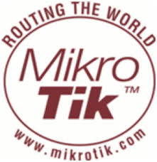

 Mikrotīkls Ltd., відомий у всьому світі як MikroTik — латвійський виробник обладнання для комп'ютерних мереж. Основним продуктом компанії є бездротові маршрутизатори. Станом на 2014 рік компанія налічувала більш ніж 100 співробітників. Засновано: 1995
Senenko Vitalik Org. Kyiv. 2015.